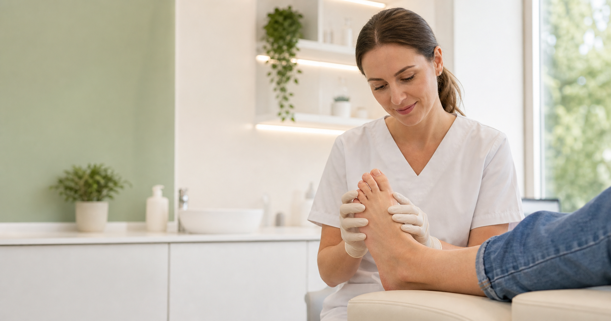
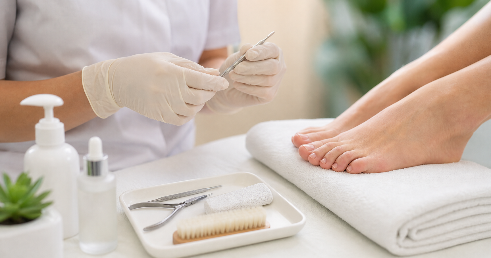

Uñas encarnadas
Evaluación de uñas clavadas, dolorosas o inflamadas.
Atención podológica en Lomas de Zamora
Atención podológica para uñas encarnadas, callosidades, durezas, dolor por presión del calzado y control preventivo en Lomas de Zamora.

Consultas para Lomas de Zamora y localidades cercanas.
Cuidado podológico para molestias frecuentes del pie.
Revisión preventiva para evitar recurrencias.
Atención podológica
La atención combina revisión del pie, cuidado de uñas y tratamiento de zonas de presión para mejorar comodidad al caminar y prevenir nuevos problemas.

Evaluación de uñas clavadas, dolorosas o inflamadas.
Atención de engrosamientos por apoyo, calzado o roce.
Trabajo sobre zonas que generan incomodidad al pisar.
Cuidado de uñas y pies cuando el corte en casa se vuelve difícil.
Consulta
Indicá que consultás desde Lomas de Zamora.
Contá si es uña, dolor, callo, dureza o control.
Enviá horarios posibles para coordinar mejor.
Preguntas frecuentes
Las consultas más habituales son por uñas encarnadas, callosidades, durezas, dolor por presión del calzado y dificultad para cortar las uñas.
Depende de cada persona. Si hay uñas difíciles, durezas recurrentes, dolor o movilidad reducida, puede convenir un control periódico.
Indicá edad aproximada, motivo de consulta, si hay dolor o inflamación, desde cuándo ocurre y si tenés alguna condición como diabetes o problemas circulatorios.
Contacto
Escribí por WhatsApp para orientar la atención según tu molestia.